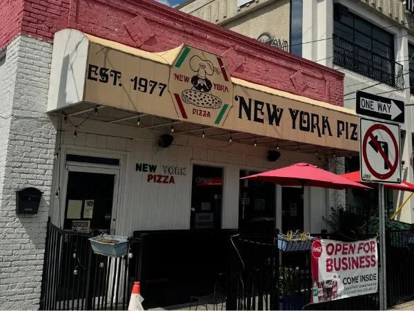
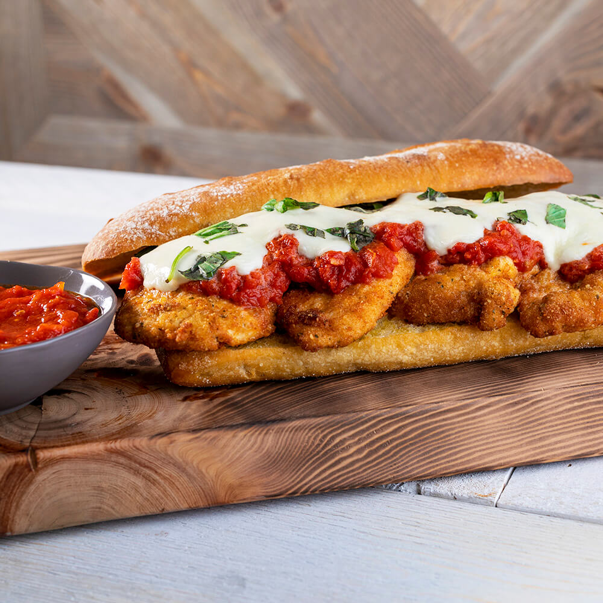
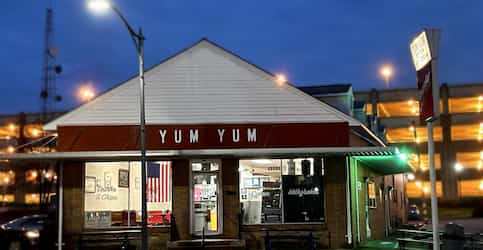
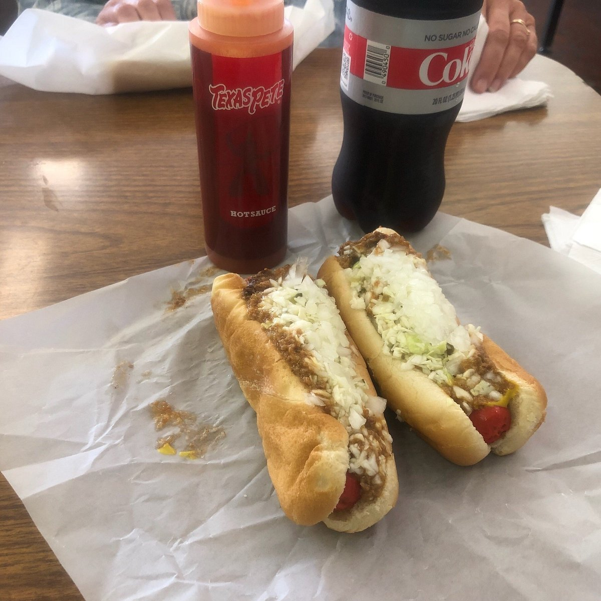

About
New York Pizza is a popular pizzaria located on Tate street right next to campus.
Serving delicious pizza, subs, pasta dishes and more, New York Pizza is a great, reliable place to grab a meal at any time of day
or night. Since my freshman year, I've been enjoying their food and one of the best restraunts within walking distance of campus.

Though I usually get Pizza, the Chicken Parmesan is one of my favorite dishes at New York Pizza and is worth the try!
Hours and Contact Information
- Monday: 11:30 AM - 2:00 AM
- Tuesday: 11:00 AM - 2:00 AM
- Saturday: 12:00 PM - 12:00 AM
- Sunday: 1:00 PM - 12:00 AM
- Phone: 336-763-1426
- Address 337 Tate St, Greensboro, NC 27403

About
Sushi Republic is the perfect location for sushi lovers. It is located right next to campus and has been voted as "The best sushi
in Greensboro". They offer a wide variety of lunch and dinner options, ranging from classic rolls to innovative new creations.
This sushi restraunt is a great place to grab a quick bite or to get dinner with company.
The sushi at Sushi Republic is always fresh and flavorful.
I recommend trying any of their signature rolls.
Hours and Contact Information
- Monday-Friday: 11:30 AM - 2:30 PM
- Saturday: 5:00 PM - 9:30 PM
- Sunday: CLOSED
- Phone: 336-274-6684
- Address 329 Tate St, Greensboro, NC 27403

About
If you have a sweet tooth, then this is the place for you. Yum Yum Better Ice Cream is a Greensboro staple and are known
not only for their ice cream and floats, but also their hot dogs. This is a great choice for a quick lunch on campus or a sweet treat on a hot day.

Though they are not my favorite, my girlfriend swears by their hot dogs so I had to mention them.
Hours and Contact Information
- Monday: 10:30 AM - 5:30 PM
- Tuesday-Friday: 10:30 AM - 9:00 PM
- Saturday: 10:30 AM - 5:30 PM
- Sunday: CLOSED
- Phone: 336-272-8284
- Address 1219 Spring Garden St, Greensboro, NC 27403